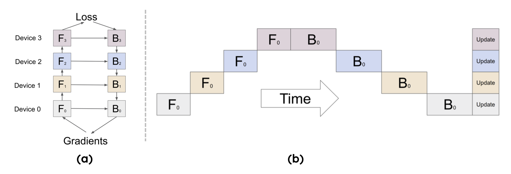
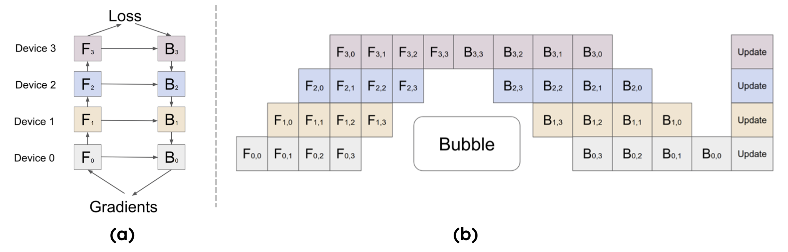

08. PP 流水并行原理(DONE)#
Author by：高亮
接下来将深入解析流水线并行（Pipeline Parallelism, PP）的核心原理与优化策略。从最基础的朴素流水并行开始，阐述其前向和反向传播中数据在多个设备间传递的工作方式，并引出其核心性能瓶颈——空泡（Bubble）。之后会重点介绍空泡率的计算，分析如何通过增大 micro-batch 来降低空泡、提升设备利用率。随后，会探讨 Google 提出的 GPipe 如何通过前向与反向交错执行的调度策略来高效利用硬件。
1. 朴素流水并行原理#
对于多层模型，当参数规模超出单卡内存上限时，一个直观的解决方案是按层切分模型，将每部分部署在独立设备上。例如，若模型含 12 层（layer），可切分为 4 份（GPipe 论文[1]中称每一份为一个 cell），每份 3 层，再将 4 份分别部署到 4 块 GPU 上。
整体结构如下图（a）所示，第 k 个 cell 的模型参数对应存储在第 k 块 GPU 上（即按上述示例，每块 GPU 仅保存 3 层参数）。其中，\(F_k\) 和 \(B_k\) 分别表示第 k 个 cell 的前向计算（forward）与反向计算（backward）。

对于单个 batch，计算顺序需遵循流水线逻辑：图中下标 0 代表第 0 个 batch，不同色块对应不同 rank（GPU），每一列代表一个时间段（如图（b）所示）。具体流程如下：
在前向传播过程中：rank0 接收训练数据并执行本地计算，生成 Activation 后传递给 rank1；rank1 接收 Activation 完成本地计算，再传递给 rank2；依次类推，直至 rank3 完成前向计算，生成模型最终输出。
在反向传播过程中：rank3 基于模型输出与标签计算损失，生成梯度后传递给 rank2；rank2 结合接收的梯度与本地缓存的 Activation 计算梯度，再传递给 rank1；依次回传至 rank0，最终得到所有 rank 的梯度。
在完成一次前向与反向流水线传输后，需等待 rank0 完成反向计算，再使用当前 batch 的梯度统一同步更新（synchronous）所有层的参数。至此，每个 rank 的权重参数更新完毕，一轮迭代训练结束。
2. Bubble 空泡率#
在上一节中，我们明确了朴素流水并行（PP）的执行逻辑：模型被切分为 \(p\) 个 stage，micro-batch 依次在各 rank 上完成前向计算，再按反向顺序回传梯度完成反向计算。
为量化流水线的“忙闲程度”，需引入刻画“等待/空转”开销的指标——并行空泡（Parallelism Bubble）及其占比空泡率（Bubble Ratio）。
直观理解：流水线并非从启动即“满负荷”运转。前期需将各 stage 依次“灌满”（warmup 阶段），尾部需将在途 micro-batch“排空”（cooldown 阶段）。这两段头尾空转时间的总和即为空泡时间（Bubble Time），其在总迭代时间中的占比即为空泡率。
2.1 Bubble 时间计算#
空泡时间的计算公式为：
其中各参数含义如下：
\(p\)：流水线并行度（stage/pipe 数量）；
\(m\)：micro-batch 数量；
\(t_f\)：单个 micro-batch 在某一 stage 的前向计算时间；
\(t_b\)：单个 micro-batch 在某一 stage 的反向计算时间。
空泡时间为何是 \((p-1)(t_f+t_b)\)？
可将时间线拆分为多个“时隙（slot）”：前向时隙时长约为 \(t_f\)，反向时隙时长约为 \(t_b\)。流水线需经历两个空转阶段：
warmup 阶段：第一个 micro-batch 需经过 \((p-1)\) 个前向时隙才能抵达最后一个 stage（rank \(p{-}1\)），此阶段需额外 \((p{-}1)t_f\) 空转时间；
cooldown 阶段：最后一个 micro-batch 的梯度需经过 \((p-1)\) 个反向时隙才能回传至第一个 stage（rank 0），此阶段需额外 \((p{-}1)t_b\) 空转时间；两段空转时间合并为 \((p-1)(t_f+t_b)\)，即空泡时间。
2.2 理想迭代时间#
理想迭代时间指流水线进入稳定阶段后，无空转的纯计算时长，计算公式为：
稳定阶段的核心特征是：流水线每“推进”一个时隙，就有一个 micro-batch 的前向或反向计算在各 stage 上同步进行，无设备空转。
2.3 空泡率（Bubble Ratio）#
空泡率为“空泡时间”与“总迭代时间（空泡时间+理想迭代时间）”的比值，代入公式可简化为：
从空泡率公式可推导出以下结论与实践启示：
micro-batch 数量 \(m\) 越大，空泡率越低：当 \(m \to \infty\) 时，\(\displaystyle \lim_{m\to\infty}\frac{p-1}{m+p-1}=0\)，这是 GPipe/1F1B 要求 \(m \gg p\) 的根本原因。
实例：若 \(p{=}4,\,m{=}8\)，则空泡率 \(= \tfrac{3}{8+3}\approx 27\%\)；若 \(m\) 提升至 32，空泡率降至 \(\tfrac{3}{32+3}\approx 8.6\%\)，空转显著减少。
并行度 \(p\) 越大，需同步增大 \(m\) 以控制空泡：若盲目增加 \(p\) 但不提升 \(m\)，会放大 warmup/cooldown 的头尾开销，导致空泡率升高。
上述推导默认“各 stage 前/反向用时均衡”且“采用同步调度”。若 stage 时长失衡或存在通信阻塞，实际空泡率会高于理论值，需通过后续交错调度（GPipe/1F1B）与通信-计算重叠优化。
空泡率是流水线并行的核心评估指标，它将“结构性空转”与“有效计算”分离，直接指导三大优化方向：增大 \(m\)、控制/平衡 \(p\)、通过调度与重叠“隐藏”头尾空转。
3. Google GPipe 原理解析#
3.1 GPipe 核心思想#
基于前文定义的空泡时间与理想迭代时间公式：
可计算朴素流水并行在 \(m=1\)（不切分 micro-batch）时的空泡率：
当 \(p=4\) 时，设备利用率仅 25%，大部分时间处于空转。为降低空泡、提升利用率，需基于公式增大 \(m\)。Google 提出的 GPipe 正是通过“切分 micro-batch + 前向-反向交错调度”，在有限显存下实现 \(m \gg p\)，显著降低空泡率并提升吞吐，其原理如图（b）所示：

3.2 对比朴素 PP#
GPipe 采用模型并行方案，将模型切分为连续的 stage 并部署在独立设备上，既支持超大规模模型训练，又通过流水线逻辑提升设备利用率。其核心优化逻辑如下：
将 mini-batch 进一步切分为更小的 micro-batch；
处理完一个 micro-batch 并将结果传递给下游设备后，立即启动下一个 micro-batch 计算，通过“计算-传递重叠”减小空泡。
结合空泡率公式，当 \(m>1\) 时，GPipe 的空泡率仍为 \(\frac{p-1}{m+p-1}\)，利用率则为：
对比朴素流水并行（\(m=1\) 时 \(U=\frac{1}{p}\)），在同一 \(p\) 下，GPipe 相对朴素 PP 的吞吐提升倍数为：
增大 \(m\) 可摊薄结构性空泡 \((p-1)\)，使空泡率从 \(\frac{p-1}{p}\) 降至 \(\frac{p-1}{m+p-1}\)，利用率从 \(\frac{1}{p}\) 提升至 \(\frac{m}{m+p-1}\)；当 \(m\gg p\) 时，利用率 \(U(m)\to 1\)，接近理论上限。
4. 动态内存峰值分析#
4.1 前向缓存 Activation 内存#
GPipe 采用“两段式调度”（先全前向、再全反向），从单设备视角看，每个节点需完成 \(m\) 组 micro-batch 的前向计算，且在反向阶段开始前无法丢弃前向生成的 Activation（反向计算依赖 Activation），因此需将中间 Activation 缓存至内存。
内存峰值出现在“前向阶段结束、反向阶段未开始”的瞬间：此时每个 stage 需同时缓存 \(m\) 个 micro-batch 的 Activation，形成动态内存峰值；进入反向阶段后，随着每个 micro-batch 反向计算完成，对应 Activation 逐步释放，内存占用才开始单调下降。
动态内存峰值的成因可总结为以下四点（由 GPipe 调度特性决定）：
两段式时序：严格遵循“全前向（all-forward）→全反向（all-backward）”，Activation 需跨阶段留存；
反向依赖：反向计算必须使用对应的前向 Activation，且反向需等待全前向结束，因此 \(m\) 个 micro-batch 的 Activation 需留存至反向阶段；
峰值时机：前向结束、反向未开始时，Activation 缓存量达到最大；
线性增长：激活显存与 \(m\) 成正比（\(\propto m\)），增大 \(m\) 降低空泡率的同时，会快速触达显存上限。
4.2 Activation 生命周期管理#
深入分析 Activation 的“生成—驻留—释放”生命周期，可更清晰理解内存峰值的来源：
在 GPipe 的两段式执行中，第 \(i\) 个 stage 的第 \(j\) 个 micro-batch 的 Activation，前向结束时会生成“可反向的边界 Activation”（如 Transformer 的隐状态、残差分支输入、LayerNorm 输入，部分实现还包含 Q/K/V）。该 Activation 需满足两个需求：
异步传递给下游 stage \(i+1\)，作为其前向输入；
本地长期缓存，直至该 micro-batch 的反向计算在本 stage 启动。
由于 GPipe 采用“先全前向、再全反向”，反向计算按“末段→首段、最后一个 micro-batch→第一个 micro-batch”的倒序推进：stage \(p{-}1\) 先处理 \(j=m{-}1\) 的 micro-batch，再处理 \(j=m{-}2\)，以此类推；stage \(i\) 需等待梯度从 \(i+1\) 回传后，才启动对应 micro-batch 的反向计算。
因此，第 \((i,j)\) 个 Activation 的驻留时间包含两部分：
结构性等待：等待全前向结束并轮到本 stage 反向，耗时约 \((p-1-i) \cdot t_f\)；
序号等待：等待后续 micro-batch 反向完成，耗时约 \((m-1-j) \cdot t_b\)；
用“时隙”近似表示，驻留时间公式为：
其中 \(t_f,t_b\) 分别为单 micro-batch 在单个 stage 的前/反向时长（基于均衡假设）。这意味着：编号越小的 micro-batch（\(j\) 小）、越靠前的 stage（\(i\) 小），Activation 驻留时间越长；反之则驻留时间越短。
综上，GPipe 中 Activation 的生命周期可概括为：
生成（前向）：stage \(i\) 处理 micro-batch \(j\) 的前向，生成激活张量 \(F_{i,j}^{(F)}\)，需缓存至该 micro-batch 的反向 \(B_{i,j}\) 执行时；
驻留（前向→反向间）：因 GPipe 不交错前向与反向，所有 \(F_{i,0\ldots m-1}^{(F)}\) 需驻留至全局前向结束；
释放（反向）：stage \(i\) 完成 micro-batch \(j\) 的反向 \(B_{i,j}\) 后，立即释放 \(F_{i,j}^{(F)}\)。
4.3 内存峰值公式估算#
GPipe 单卡内存峰值由“参数系内存”与“激活系内存”两部分组成，核心关系为：
其中：
\(p\)：流水线并行度（stage 数）；
\(m\)：micro-batch 数；
\(L_i\)：第 \(i\) 个 stage 包含的层数；
\(A_{\text{layer}}\)：单层、单 micro-batch 需缓存的 Activation 内存，与 \(b\)（micro-batch 内样本数）、\(s\)（序列长度）、\(h\)（隐藏维度）、精度字节数正相关，经验公式为 \(A_{\text{layer}} \approx c \cdot b \cdot s \cdot h \cdot \text{bytes}\)（\(c\) 为系数，取决于是否保存 QKV/残差/归一化、是否使用 FlashAttention 等）；
\(P_i\)：第 \(i\) 个 stage 的参数+优化器+梯度内存（字节），\(P_{\max}=\max_i P_i\)（取各 stage 中参数系内存的最大值）。
具体估算公式如下：
stage 级激活峰值：单个 stage 需缓存的最大 Activation 内存，\(M^{(i)}_{\text{act, peak}} \;\approx\; m \cdot L_i \cdot A_{\text{layer}}\)；
训练时单卡峰值：单卡最大内存占用，\(M_{\text{peak}} \;\approx\; \underbrace{P_{\max}}_{\text{参数系}} \;+\; \underbrace{\max_i \big(m L_i A_{\text{layer}}\big)}_{\text{激活系}}\)。
结论：GPipe 中激活系内存与 \(m\) 严格线性相关，增大 \(m\) 降低空泡率的同时，会同步推高内存峰值。
4.4 重计算降低内存峰值#
梯度检查点（Gradient Checkpointing，又称“重计算”）是解决 GPipe 内存峰值的核心技术，核心思想是：不长期保存层内中间 Activation，仅保留“分段边界”的必要张量；反向计算时，重新执行前向计算以恢复层内中间值，用少量计算开销换取内存占用降低。
将第 \(i\) 个 stage 的 \(L_i\) 层切分为 \(g_i\) 段，仅缓存段边界 Activation，层内中间值反向时重算，此时 stage 级激活峰值公式调整为：
其中：
\(A_{\text{boundary}}\)：单 micro-batch 的段边界 Activation 内存（远小于 \(L_i \cdot A_{\text{layer}}\)）；
\(\alpha\)：段内短期工作集系数（与 \(m\) 无关，由重算粒度决定）。
对比不开启重计算的场景（\(M^{(i)}_{\text{act, peak}} \approx m\, L_i\, A_{\text{layer}}\)），开启重算后，激活系内存与 \(m\) 的线性系数从 \(L_i \cdot A_{\text{layer}}\) 降至 \(A_{\text{boundary}}\)，内存峰值显著降低，从而可在相同显存下增大 \(m\) 以进一步降低空泡率。
重计算的本质是“用少量重算换长期驻留显存”，在 GPipe 场景下，可将与 \(m\) 同步放大的“长期激活体量”压缩至仅段边界，在不牺牲训练稳定性的前提下，释放显存空间或提升吞吐。
5. 总结与思考#
朴素流水并行通过“切分模型、串行传递数据”解决了单卡内存不足问题，但存在明显的空泡问题，设备利用率低；空泡率公式 \(\frac{p-1}{m+p-1}\) 揭示了“增大 \(m\)、平衡 \(p\)”是降低空泡的核心方向。
Google 提出的 GPipe 基于“前向-反向交错调度”，通过切分 micro-batch 实现 \(m \gg p\)，将设备利用率提升至接近理论上限，但也带来了“Activation 缓存导致的内存峰值”挑战。
重计算通过“重算层内中间值、仅存边界 Activation”，有效降低了 GPipe 的内存峰值，实现了“内存-计算”的平衡，为超大规模模型的流水线并行训练提供了关键支撑。
6. 本节视频#
7. 参考与引用#
[1] Huang, M. Y., Cheng, Y., Chen, K., Lee, H. Y., Ngiam, J., Chen, X., ... & Dean, J. (2019). GPipe: Efficient Training of Giant Neural Networks using Pipeline Parallelism. arXiv preprint arXiv:1811.06965.